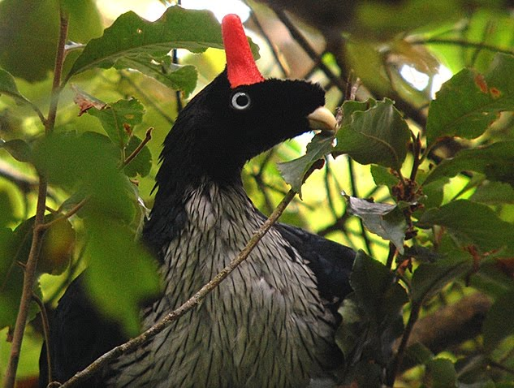
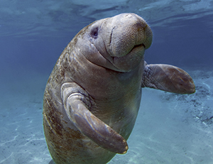

Pavon Cornudo
El guan cornudo o pavón cornudo (Oreophasis derbianus), también chachalaca cornuda, faisan de cuerno rojo, paují cornudo o simplemente pavón, es una especie de ave galliforme de la familia Cracidae, la única del género Oreophasis, que se encuentra mayormente en los bosques húmedos montanos de Chiapas entre los 2500 y 3350 m s. n. m., sin embargo, también puede verse en otros estados del sur de México (rara vez se observan) y muy escasamente en Guatemala. Se cree que esta especie es la única sobreviviente de un antiguo género de crácidos que evolucionaron independientemente del resto de la familia.
Miden entre 75 y 85 cm de longitud. Se caracterizan por tener sobre la cabeza una proyección o "cuerno" rojo. El plumaje del dorso es negro azulado brillante, con una banda blanca en la mitad de la cola. El vientre, el pecho y la garganta son blancos con un dibujo a la manera de escamado de líneas negruzcas. El iris es blanco. Ambos sexos tienen aspecto similar. No se conocen subespecies. Su dieta consiste en frutos, hojas verdes y pequeños invertebrados. Toman agua de las bromelias. Anidan cerca de los cursos de agua en verano, en la parte alta de los árboles. La hembra pone dos huevos que incuba 35 días.

Manati
Es un animal corpulento que tiene un aspecto pisciforme con una aleta terminal redondeada en forma de espátula. Su piel esta finamente arrugada, con cinco centímetros de espesor, cubierto generalmente por algas y pequeños moluscos. La cabeza se ensancha y se une sin cuello ni hombros. No tiene ningún miembro posterior, los manatíes poseen miembros delanteros flexibles y a manera de remo, o aletas, las cuales son usadas para ayudar al desplazamiento sobre el fondo, rasguñar, tocar e incluso para abrazar a otros manatíes, para mover el alimento hacia adentro y facilitar la limpieza de la boca.
Como otros manatíes, es una especie completamente adaptada a la vida acuática, no teniendo ninguna extremidad en la parte posterior de su cuerpo. La distribución del pelaje en su cuerpo es escasa, la cual evita la acumulación de algas en la piel. Tiene aproximadente entre 2,50 y 4 metros de longitud, y pesa entre 350 y 600 kilogramos, las hembras siendo generalmente más grandes que los machos. Los manatíes más grandes pueden pesar hasta 1500 kilogramos y miden hasta 4,6 metros.[5] El color de la piel puede variar de gris a marrón. Sus aletas tienen 3 o 4 uñas, que sirven para mantener el alimento cuando está forrajeando.
